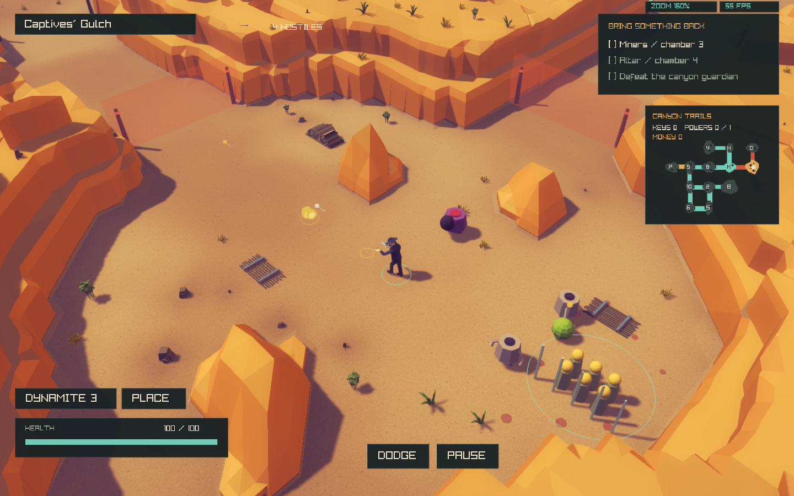
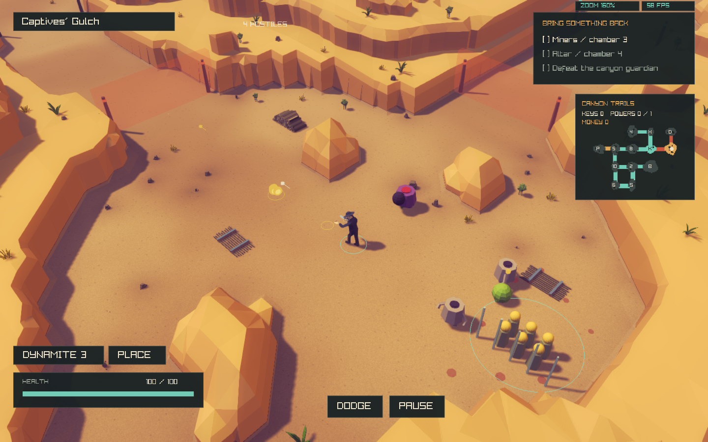
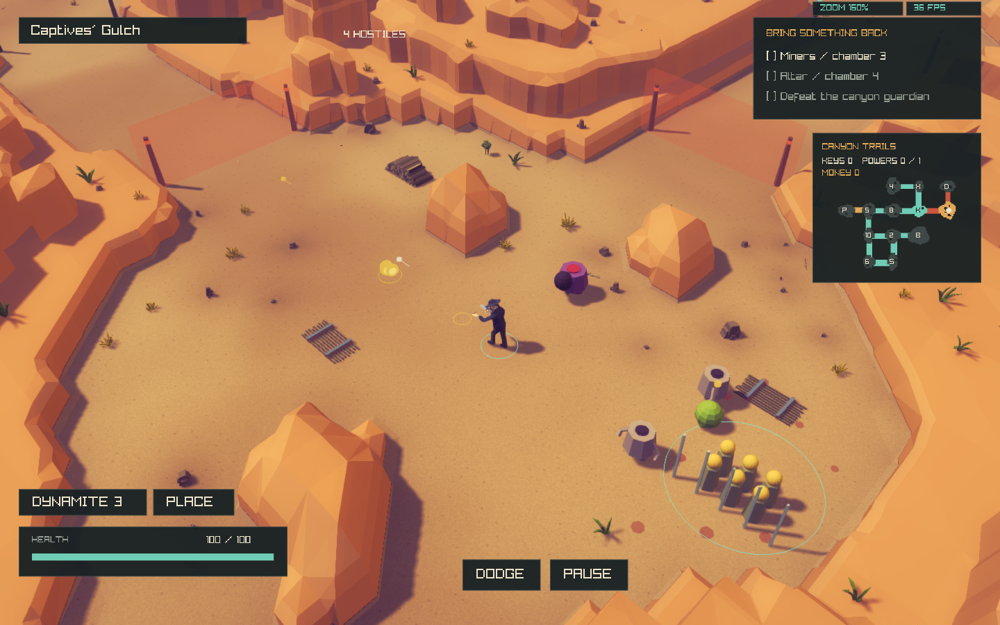
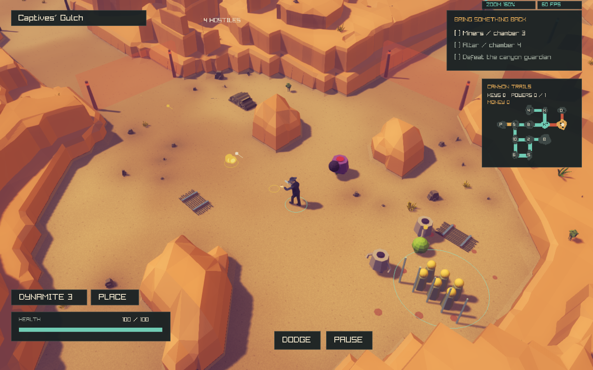
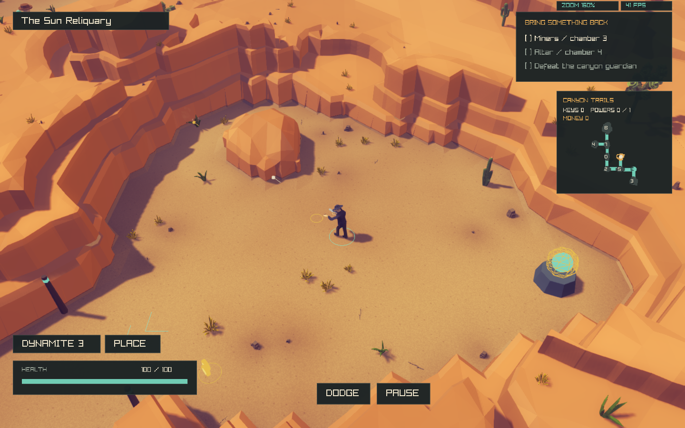

DeathWard · Canyon contour correction · November 2026
Independent rock contours.
Fixed gameplay boundaries.
Visual acceptance remains partial. This pass changes the mesh rules rather than only lowering heights. The remaining regular wall runs are visible below. Passing geometry and gameplay checks does not establish a visual match.
The previous pass was committed as 09cd526. This working-tree correction preserves playable footprints, collision, room connections and camera settings. Every game image is a native capture; there is no paint-over, recoloring or generated comparison image.
Target versus current game
Native camera: 160% zoom, perspective, 45° FOV, 1440 × 900. The supplied reference also labels 160%; its seed, player position and camera pose are unavailable. These comparisons assess visual characteristics, rather than claiming identical scene composition.
Open combat room
Connected trail and surrounding formations
Quiet room with supported upper vegetation
Matched before/after captures
Same seed, scene, frame count and camera. Left side shows committed pass 09cd526; right side shows this correction. The captured FPS labels are incidental and are not a controlled performance comparison.
Works
Combat
Diagnosis and algorithm changes
The canonical generator still builds the expedition floor and its solid terrain field. CanyonAppearance creates a separate cosmetic triangle mesh. CanyonScene packages its caps and walls into render chunks; WesternScene places existing native models. Canonical collision, roads, rivers, passage sockets and encounter logic are outside this correction.
composition_strength controls a static scenic framing bias baked along the normal world-view axis. It does not read the live camera or move cliffs when the player rotates or moves. Set it to 0 to disable that bias. Decorative terrain still extends beyond the playable floor.
Visual assessment and architectural limit
- Steep faces and broad caps remain, rather than broad triangular embankments.
- Upper ledges break into more local formations; the same number of shelves no longer wraps every room at one fixed spacing.
- Some runs at ground level still reveal the original room boundary. This criterion is not fully satisfied.
- The reference has more deliberately composed isolated masses and vegetation pockets. Fixed boulder footprints and the unknown source layout prevent literal composition matching.
- Some clipped facets and boulder bases remain more regular than the reference.
For a stronger architectural departure, replace the remaining continuous scenic rim with individually seated polygonal rock masses, clipped to the canonical non-playable mask, and bridge their bases with a low erosion skirt. Its contour model and spatial index would be independent of the source lattice. The current correction supplies independent shelf fields and triangle indexing, but does not implement that full rock-mass union system. The canonical floor contact would still have to remain fixed.
Regression evidence
CPU checks cover twelve maps, six seeds, all river categories, deterministic geometry/decorations, unchanged canonical hashes, floor cells and sampled physical traces, clear roads and supported vegetation, config rejection and rollback. A new regression exercises height/ray/support queries for a triangle displaced into another source cell. GPU checks compare actual rendered mesh rays across five seeds and both themes. Occlusion checks exercise native fading, outlines and firing. Road, river, generated-floor and room-graph suites are rerun. The prior full floor-progression run remains archived; its gameplay code is unchanged.
{
"maps": "12",
"categories": "4",
"asset_roles": "5",
"candidates": "21268",
"collision_room_checks": "180",
"original_highland_median": "7.55781",
"visual_highland_median": "3.56685",
"original_max": "10.7415",
"visual_max": "6.8",
"appearance_mean_ms": "790.897"
}A native mesh-ray failure during iteration exposed displaced geometry extending beyond the source field at its outer edge. The correction pins that outer strip; the final GPU suite is the evidence. The occlusion fixture also explicitly selects a visible obstruction that is physically solid in both test views before checking that fading preserves it. Physical obstruction is not inferred from visual height.
Performance observation
One 240-frame paired native stress run, same final executable/assets, original legacy terrain (enabled 0) versus this pass. This is not an isolated comparison against commit 09cd526 and is not ordinary gameplay FPS. A single WSL pair does not establish a general performance gain. Additional mesh indexing and CPU preprocessing are startup costs; the native geometry-test timing is recorded above.
legacy: 113388 terrain triangles; 105 chunks; 198 scenery instances.
current: 274613 terrain triangles; 105 chunks; 1068 scenery instances.
Legacy log · Current log · Parsed measurements · Build log
Configuration, changed files and rollback
assets/visual/canyon.cfg controls nominal first elevation, maximum height, height/silhouette variation, shelf width/count, facets, density by terrain category, extent and budgets. composition_strength is new. Heights below the maximum vary locally; minimum_height is the nominal first elevation, rather than a strict minimum at every eroded edge. Restart after edits. No new model or texture dependency was added by this pass.
Source changes: CanyonAppearance.hpp/.cpp, CanyonScene.cpp, the visual config, and geometry/occlusion tests. Report generation: scripts/canyon-composition-report.py. Room generation, camera, UI, player controls, combat and projectile code are unchanged.
./build/deathward --expedition --theme canyon --style original
# Restore original geometry/dressing for comparison
DEATHWARD_CANYON_CONFIG=assets/visual/canyon-legacy.cfg ./build/deathward
Remaining work
- Visual acceptance is not complete. Ground-level wall runs can still reveal the fixed room outline; some upper shelves remain too continuous.
- Exact composition is not matched: the reference has an unknown floor/seed and arranged objects. Existing playable footprints and boulder positions remain fixed by instruction.
- Some boulders still have regular lower footprints and some cliff facets follow the source lattice. These are visible in the native comparisons.
- Cliff plants are less densely clustered than the reference in some views. Green native assets remain in use.
- Visual and canonical physical rock profiles differ. Canonical navigation/projectile/flying-actor height volumes were not redesigned.
- WASM verification remains waived. No claim of pixel identity or full visual acceptance is made.
Committed prior pass and native foliage library
Discarded intermediate captures
The last candidate moved upper formations closer to a lower boundary ledge. It made the stacked bands more conspicuous and was rejected; the source and executable were restored to the tested pass.

pass1-works · retained for comparison, not final.
pass2-works · retained for comparison, not final.
pass3-works · retained for comparison, not final.
candidate-works · retained for comparison, not final.
candidate-power · retained for comparison, not final.